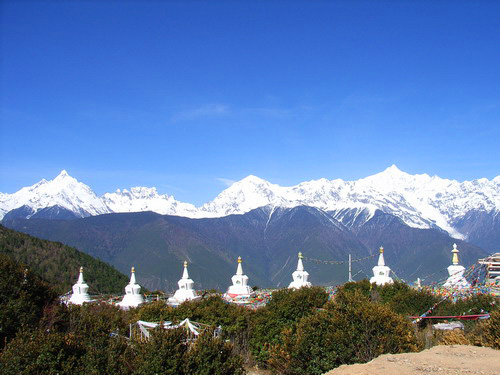
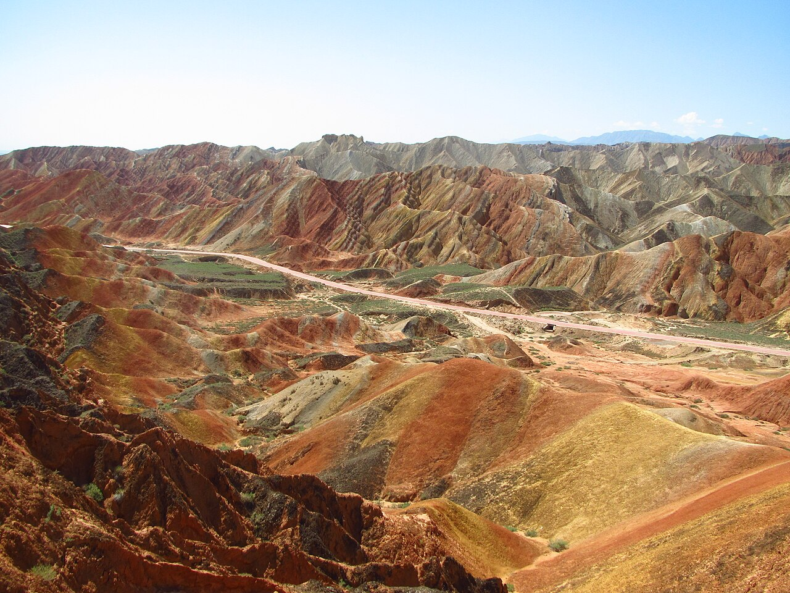

川西环线以成都为圆心，串联阿坝、甘孜两州最精华的高原景观，无需办理进藏手续即可体验雪山、草原、藏寨与冰川。线路灵活，可顺时针或逆时针，也可根据时间取舍色达、亚丁等分支。
川西的魅力在于「短距离、高密度」的景观切换：从成都平原数小时即可抵达四姑娘山这样的世界级峰林，再经小金、丹巴进入藏寨与河谷地带。丹巴甲居藏寨、中路藏寨以碉楼与秋色闻名；继续西行则进入摄影走廊新都桥、塔公草原，以及海拔更高的理塘、稻城亚丁。若向北绕行，色达五明佛学院的红房子与亚青寺的原野修行场景，则提供完全不同的人文冲击。
环线整体海拔高于一般国内自驾，但多数游客无需像进藏那样长时间停留在 4500 米以上。秋季（9–11 月）色彩最为饱和，冬季部分垭口可能因雪封闭。建议携带防滑链、备足氧气与常用药品，并尊重当地藏区风俗与寺庙管理规定。
Itinerary
分日行程
成都 → 四姑娘山 → 小金
经映秀、卧龙进入巴朗山隧道，抵达四姑娘山镇。时间充裕可进双桥沟或长坪沟半日游，远观四姑娘山四座雪峰。下午经小金县向丹巴方向，河谷秋色初现。
丹巴藏寨深度游
上午游览甲居藏寨，藏式碉楼与梨树林立，秋季层林尽染。下午可前往中路藏寨或梭坡碉群，体验更安静的藏乡生活。丹巴海拔较低，适合作为高原适应日。
丹巴 → 八美 → 新都桥
经墨尔多神山观景台、八美草原，可顺访惠远寺。下午抵达新都桥，沿途光影变化丰富，是摄影爱好者高频停车的路段。傍晚可在贡嘎雪山观景台碰运气看日照金山。
新都桥 → 理塘 → 稻城
复用 318 川藏段精华：剪子弯山、卡子拉山、海子山。理塘县城午餐后南下稻城，为亚丁景区储备体力。注意高海拔驾驶勿超速。
稻城亚丁
全天亚丁景区徒步或电瓶车组合，重点看三神山与高山湖泊。若体力有限，洛绒牛场已是极佳观景点。返回稻城县城补给。
稻城 → 新都桥 → 康定
沿原路或经雅江北上，回到新都桥—康定一线。可在康定城区感受情歌广场与跑城河夜景，为北线或东返做准备。
康定 → 色达（可选）或 海螺沟方向
若选色达支线，经炉霍、翁达抵达五明佛学院，需提前预约并遵守参观规定。若时间紧，则改走泸定方向，经磨西镇可远眺贡嘎东坡。
返回成都
经泸定、雅安高速回成都。可在泸定桥短暂停留，总结川西环线收获。全程检查车辆制动与轮胎磨损。
Photo Essay
沿途影像





Highlights
核心景点
四姑娘山
四座 6000 米级雪峰并列，双桥沟、长坪沟、海子沟提供不同视角。秋季彩林与雪山同框，是川西门户级景观。
丹巴甲居藏寨
「千碉之国」的代表，藏寨依山而建，白色与红色对比强烈。最佳拍摄季为 10 月中下旬，梨树叶转黄时最为上镜。
塔公草原
新都桥附近，可同时看到亚拉雪山与木雅金塔。夏季野花遍地，冬季则常能见到雪线压顶的高原牧场景象。
色达五明佛学院
世界最大藏传佛学院之一，密集红房子在山谷中铺展，需尊重宗教场所秩序与参观规定。清晨与傍晚光线适合远观全景。
海子山
古冰帽遗迹区，遍布巨石与海子，像外星地表。是理解青藏高原地质历史的天然课堂，也是 318 上极具辨识度的路段。
Route
途经站点
环线起点
可顺时针或逆时针规划，旺季提前订房。
藏寨文化核心
甲居、中路二选一深度游即可，秋季需提前订民宿。
摄影走廊
连接北线与南线的枢纽，加油站与修理点齐全。
核心景区
建议单独安排 1–2 天，注意景区限流政策。
可选支线
参观政策可能调整，出发前查询最新开放信息。
环线终点
全程约 1800 公里，视支线增减 200–400 公里。
Practical
实用信息
- 川西多盘山公路，弯道会车勿占对向车道， horn 在盲区弯道短鸣示意。
- 部分藏寨民宿条件简单，旺季价格浮动大，建议提前预订。
- 色达、亚青等宗教场所禁止无人机乱飞，服从工作人员指引。
- 高原天气多变，同一日可能经历晴、雨、雪，衣物需分层。
- 备现金，部分乡镇加油站与小店网络支付不稳定。
EV Tips
新能源出行提示
驾驶腾势 N7 等纯电 SUV 出发前，请特别注意以下事项：
- 康定、新都桥、理塘、稻城已有部分快充站，但间距仍大于平原，建议每日出发前满电。
- 长下坡（如折多山、海子山）利用动能回收可减轻制动负荷并回收电量。
- 色达、亚丁部分区域信号弱，离线地图与纸质路线备份不可少。